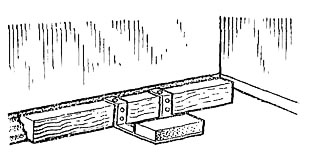

-

8(0152)31-25-61
-

kst@ggkst.by
-

http://ggkst.by
8(0152)31-25-61
kst@ggkst.by
http://ggkst.by
Карта 13: Устройство мозаичных плинтусов
Состав технологических операций. Установка и выверка деревянных реек-шаблонов; набивка мозаичного раствора; снятие шаблона и укрытие плинтуса
влажной мешковиной.
Инструменты, приспособления, инвентарь. Кельма; совковая лопата; складной метр или рулетка; измерительный шнур; кисть; профилированные
рейки-шаблоны с металлическими скобами; ведра; мешковина; ветошь.
Материалы. Мозаичный раствор каменной крошки с крупностью зерен 3...10 мм.
Схема организации рабочего места. Рабочее место при устройстве мозаичных плинтусов организуют так, как показано на рис. 1.
Последовательность выполнения технологических операций. К устройству мозаичных плинтусов приступают через 2...3 сут после укладки полов.
Установка и выверка реек-шаблонов. До начала установки реек-шаблонов местоположение будущего плинтуса смачивают водой с помощью кисти.
Рейки раскладывают по периметру стены. Начинают устанавливать рейки от угла помещения. Ширину плинтуса, т.е. зазор между стеной и рейкой-шаблоном,
отмеряют с помощью метра на одном и другом конце стены.
Рис. 1. Схема организации рабочего места при устройстве мозаичных плинтусов: 1 - установленные рейки-шаблоны, 2 - зазор между стеной и рейкой, 3 - причальный шнур между крайними шаблонами, 4 - неустановленные рейки-шаблоны, 5 - пригрузы, 6 - плинтус, укрытый мешковиной
Рис. 2. Закрепление рейки-шаблона
Установив и выверив рейку, на скобу кладут груз (кирпич) (рис. 2). Так же устанавливают рейку на другом конце стены, после чего между рейками натягивают
причальный шнур, фиксирующий положение будущего плинтуса. Промежуточные рейки-шаблоны устанавливают по причальному шнуру.
Набивка мозаичного раствора. Мозаичный раствор укладывают в зазор между стеной и рейкой (рис. 3, а). Заполнив примерно половину высоты плинтуса,
раствор уплотняют ребром полотна кельмы, после чего продолжают заполнять зазор до верха шаблона и снова уплотняют раствор и заглаживают кельмой по верху
шаблона (рис. 3, б).
Снятие шаблонов. После схватывания уложенного раствора груз снимают с металлических скоб. Полотно кельмы вставляют между рейкой-шаблоном и полом и осторожно
приподнимают конец рейки, затем берутся за скобу и движением на себя и вверх, отделяют рейку от плинтуса. Профилированную поверхность шаблона очищают ветошью
от остатков раствора для повторного использования. Обнаруженные дефекты (мелкие раковины, сколы) на поверхности плинтуса заделывают тем же раствором и
накрывают готовый плинтус увлажненной мешковиной.
Рис. 3. Набивка мозаичных плинтусов: а - заполнение и уплотнение раствора, б - выравнивание раствора заподлицо с шаблоном
Контроль качества. Необходимо следить, чтобы по всей поверхности плинтуса была равномерно распределена мраморная крошка. Готовый плинтус должен
быть сплошным по всему периметру, без выступов и других дефектов, видимых с расстояния 3 м.
Трудовые затраты. Норма времени на устройство 1 м мозаичных плинтусов - 0,43 чел-ч; нормы выработки на 1 чел-дн - 17,2 м.
Техника безопасности. Устройство мозаичных плинтусов производят во влагонепроницаемых наколенниках и резиновых перчатках.
Контрольные вопросы. Где располагаются плинтусы и каково их назначение? Когда можно приступать к устройству мозаичных плинтусов?
Чем отличается технология устройства мозаичных плинтусов от технологии устройства цементных плинтусов? Почему мозаичные плинтусы нельзя вытягивать при помощи
шаблона или малки? Каково устройство и принцип действия шаблона для набивки мозаичных плинтусов?
Карта 14 — Отделка мозаичных плинтусов